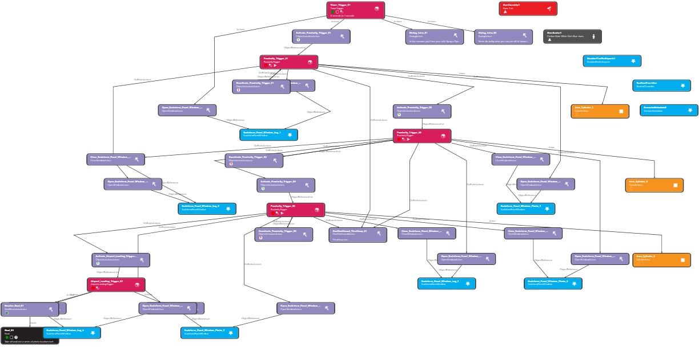

Using SimDirector to create scenarios manually requires a significant investment of time and technical effort—it is certainly not for the faint-hearted! For example, the diagram below shows the complex web of triggers, actions, and object visualisations created in SimDirector for a generated Photo Tour scenario:

P3D Scenario Generator removes this complexity by automating file creation. Instead of wiring logic trees from scratch, you select a scenario type, location filters, an aircraft, and session-specific parameters. The generator builds the complete set of output files equivalent to a manually authored SimDirector scenario.
In Prepar3D, simply load the generated scenario just as you would any saved flight and start flying. To fly a new variation—such as at a different airfield or with updated weather and time conditions—return to the generator, adjust your parameters, and create a fresh scenario in seconds.
Prepar3D Version Compatibility: This application was developed and tested specifically for Prepar3D v5. While generated scenarios and in-game HTML map panels will likely function cleanly under v6, full compatibility with v4 is less likely due to structural changes Lockheed Martin made to HTML panel rendering engines across major version releases.
If you enjoy story-driven, deeply scripted flight experiences with custom event logic, explore the extensive scenario library created by Jörg at andi20.ch. Jörg designs and publishes a catalog of over 40 free, bilingual (German/English) scenarios for Prepar3D v4, v5, and v6.
Understanding the distinct design philosophies behind hand-crafted scenarios and automated scenario generators highlights how both approaches complement each other in Prepar3D: